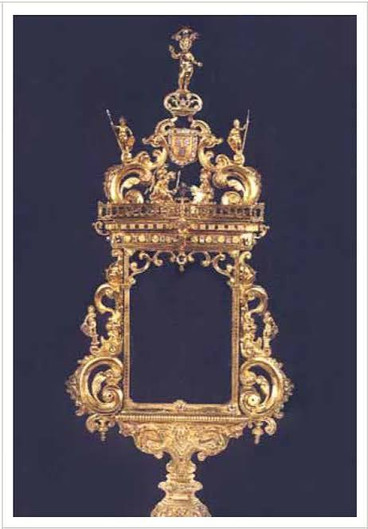
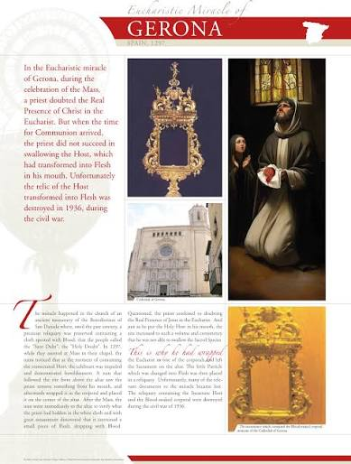
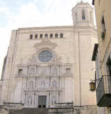

The 1297 Eucharistic miracle of Girona, Spain, occurred when a priest doubting the Real Presence of Christ witnessed the Sacred Host transform into bleeding human flesh within his mouth.
During Holy Mass at the Benedictine Monastery of San Daniele, a celebrant struggling with inner doubt received the Host. It immediately transformed into physical flesh and began to drip blood, making it impossible for him to swallow. The attending nuns witnessed the priest’s distress, and he later confessed his lack of faith to the community.
Known locally as "Sant Dubt" (The Holy Doubt), the miraculous flesh and blood-stained linen were venerated in the Cathedral of Girona for centuries. Though the physical relics were tragically destroyed during the Spanish Civil War in 1936, the story remains a powerful reminder of how God answers the honest struggles of faith with manifest signs of His love.